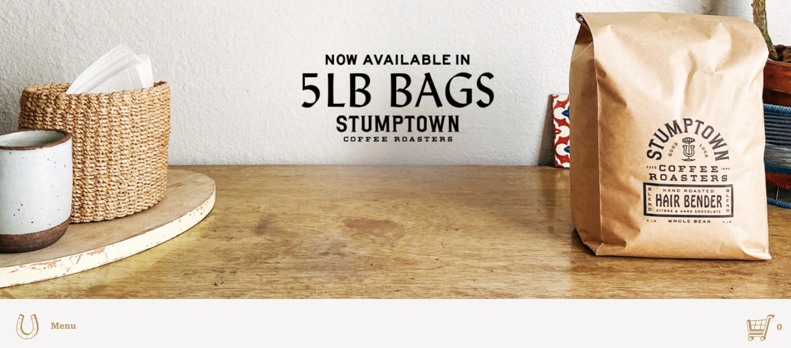
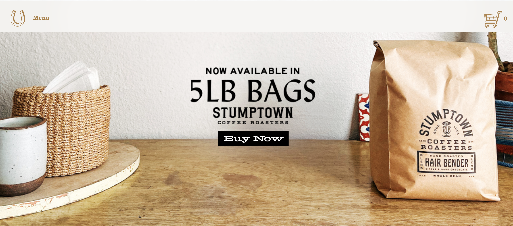
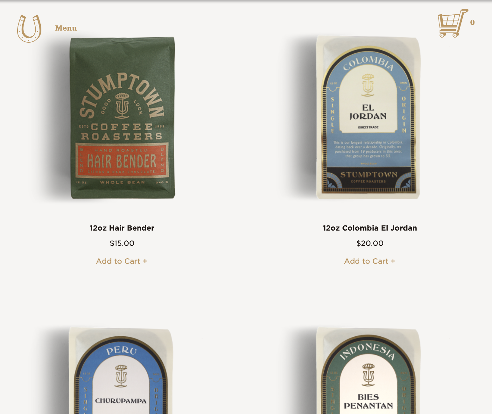
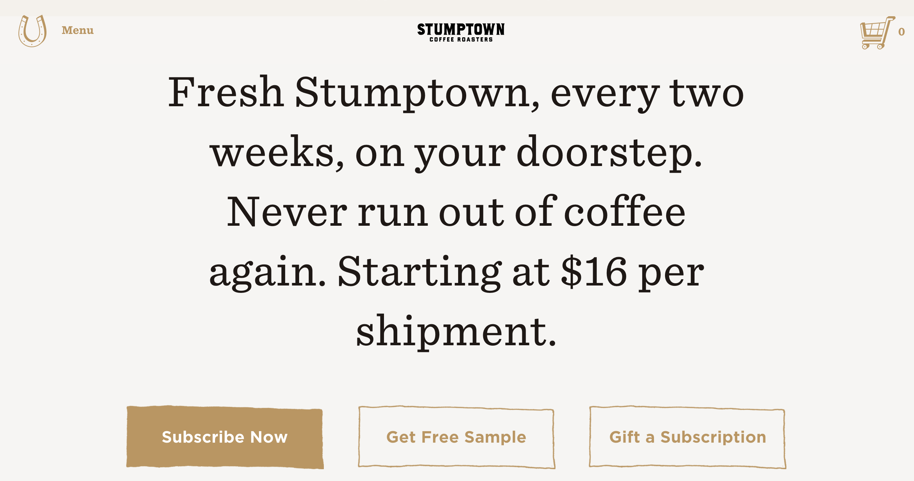

Introduction
Stumptown Coffee Roasters is a gourmet coffee co. that sells a wide variety of beans and also has a small chain of coffee shops around the US. Their website can be found @ stumptowncoffee.com The main purpose of their site is to sell coffee beans and sign customers up to a subscription based delivery system. There are other features of the site, which are meant to inform users – where their shops are located and educating coffee drinkers on how to best prepare their coffee depending on the users preferred device. For this usability test I plan on focusing on the landing page although I may refer to pages that are accessible by digging into the site by one or two clicks.
Conventions
Stumptown Coffee prides itself on being unique and maybe a little different (code for hipster – it is in Portland), which means that their site is more than likely to function in an unexpected way. I found this to be true while working through the site, but I especially noticed this in the top navigation. When the site loads the nav is placed underneath the hero image, which I found awkward and pointless. Once the user scrolls down the top nav becomes “sticky” and is anchored to the top of the screen like expected, but what is the reason for this transition? I really liked Krug’s explanation of when it’s ok to break conventions.
“If you’re not going to use an existing Web convention, you need to be sure that what you’re replacing it with either (a) is so clear and self-explanatory that there’s no learning curve—so it’s as good as the convention, or (b) adds so much value that it’s worth a small learning curve.”I don’t feel like this unexpected nav placement meets either of these criteria.  Screenshot of existing nav and hero image  Edited image of landing page with nav in top position and button for hero ad
Make it obvious what’s clickable
Krug talks about how buttons, should well… look like buttons. There should be a consistency in color, formatting and hover state that stands out from the rest of the content and lets the user know, THIS IS A BUTTON. One aspect of the Stumptown landing page that really bothers me is that the hero image is the button. It’s pretty common to see a landing page with a full width hero image that has centered text and a button underneath that links to a current promotion or the most recent news story, which is why it takes more than a millisecond to process that there is no button and the entire image is the link. They also get points deducted because their text is rasterized into the hero image, which is bad for usability as it can’t be used by screen-reader if it’s not live text.
Hierarchy
Essentially there is no hierarchy on the landing page of this site, it’s simply the hero image and then a list of products underneath in a two column grid until the user reaches the footer. Sure, I’m not crazy about landing pages with an overwhelming amount of copy, but there is no copy whatsoever, just images. What they failed to realize is that text looks cool, especially when formatted uniquely and used as “typographic candy.” Most sites I enjoy visiting have more variety on the landing page and enough content to organize in a hierarchical fashion – kind of like a snapshot of “what’s inside” so you can scan the page to find out where you want to go next.
Does this site get to the point without “happy talk”?
Moving on from the landing page – in general the copy written for this site avoids any unnecessary fluff. The subscription page is an excellent example of this and is overall the most impressive page on the site. The page has concise writing and clean hierarchy, which is probably for a good reason – they want to sell subscriptions, so the developers devoted a lot of attention to this section.
